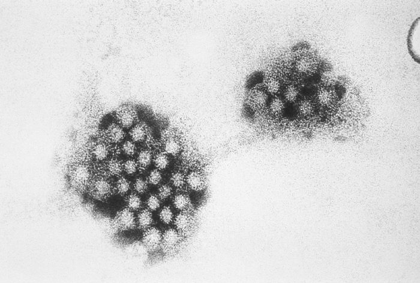
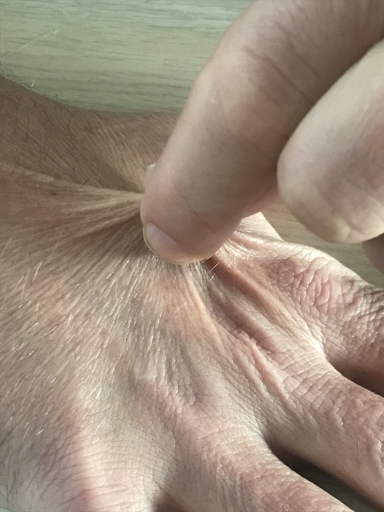
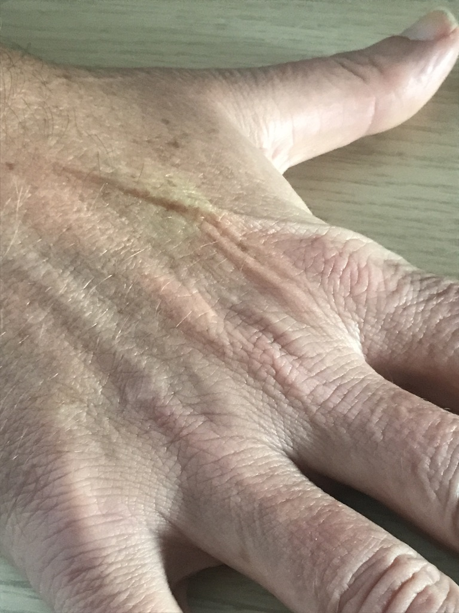
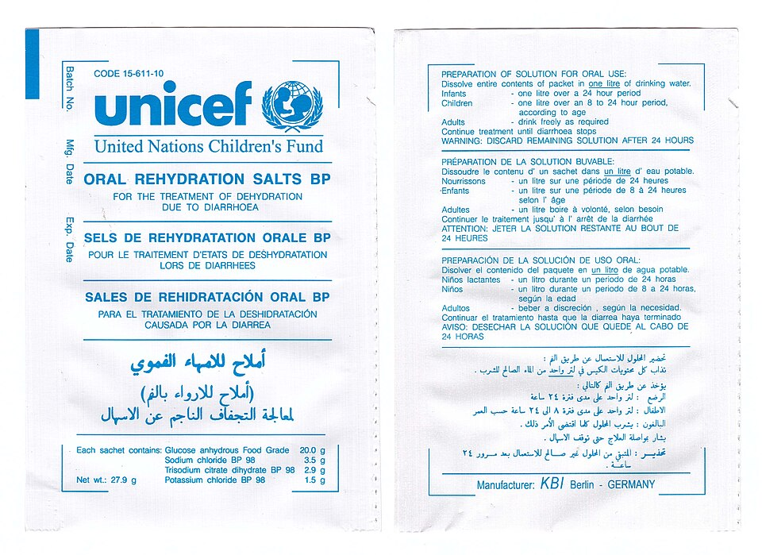

急性腸胃炎與脫水
上吐下瀉是孩子最常見的不舒服之一，大多由病毒引起，幾天內會自己好。照顧的關鍵只有一個：補充足夠的水分和電解質，避免脫水。
1為什麼會上吐下瀉？
大多數是病毒感染腸胃道，最常見的是諾羅病毒和輪狀病毒，少數是細菌（例如沙門氏菌）。病毒讓腸道黏膜暫時受損，吸收水分的能力變差，於是出現嘔吐、水瀉、肚子痛和發燒。

2脫水的警訊
孩子越小，越容易脫水。每天注意以下幾件事：


3口服電解質液怎麼喝？
口服電解質液（藥局買得到的口服補液鹽、電解質水）含有剛好比例的鹽分和糖分，是補充腹瀉流失水分的首選 [1]。關鍵是少量多次：
確保效果的訣竅
- 依包裝比例泡：粉包要用指定的水量沖泡，太濃或太淡都不好；泡好的電解質液室溫放置不要超過 24 小時。
- 冰涼一點比較好入口：可以冰過再喝，或做成冰棒慢慢含。
- 吐了不要放棄：休息 10–15 分鐘再從 5 mL 開始，大多數孩子其實能留住一部分水分。
- 補多少：每拉一次水便補約 10 mL/kg、每吐一次補約 2 mL/kg（例如 10 公斤的孩子，每拉一次補 100 mL）[1]。
- 母乳寶寶繼續餵母乳，可以縮短間隔、少量多次；配方奶寶寶照平常濃度泡，不需要稀釋 [1]。
- 不建議用運動飲料、果汁、汽水代替：糖分太高、鹽分不對，可能讓腹瀉更嚴重。

4飲食怎麼吃？
- 不需要禁食：補足水分後（通常 4 小時內）就恢復平常的飲食，早點吃東西反而讓腸道恢復得比較快 [1]。
- 選清淡、好消化的食物：稀飯、白飯、麵條、吐司、蘋果、香蕉、蒸蛋、瘦肉、豆腐。
- 少量多餐，孩子胃口差時不要勉強。
- 暫時避免：油炸、太甜的飲料或零食、果汁。
- 配方奶不必常規換成無乳糖奶粉；只有腹瀉拖很久、喝奶後明顯變嚴重時，醫師才會建議短期更換 [1]。
5不建議的做法
- 自行使用止瀉藥：可能讓病菌留在腸道、延長病程，兒童不建議使用 loperamide 等止瀉藥 [1]。
- 自行使用抗生素：大多數腸胃炎是病毒引起，抗生素沒有幫助，反而可能加重腹瀉。
- 長時間禁食或只喝白開水：白開水缺少鹽分，大量喝可能造成低血鈉。
- 用果汁、運動飲料、汽水補水。
6何時要就醫？
出現以下情況，請立刻就醫
- 精神很差、嗜睡、叫不太醒，或非常煩躁
- 6–8 小時以上沒有尿尿，或哭的時候沒有眼淚
- 喝什麼都吐，或吐出綠色、黃綠色（膽汁）或咖啡色的東西
- 血便、黑便，或陣發性劇烈哭鬧（要排除腸套疊）
- 肚子很痛、越來越脹，或按壓時很痛
- 3 個月以下的寶寶發燒，或 6 個月以下寶寶上吐下瀉
- 呼吸很快很深、手腳冰冷
這些情況請安排門診
- 嘔吐超過 1–2 天，或腹瀉超過 7 天
- 高燒超過 2–3 天
- 孩子有慢性疾病（例如心臟病、腎臟病、糖尿病、免疫低下）
7預防與消毒
- 肥皂濕洗手：酒精對諾羅病毒效果不好，飯前、上廁所後、換尿布後一定要用肥皂洗手。
- 輪狀病毒疫苗：口服疫苗，出生滿 6 週可開始接種，最晚 8 個月內完成。2027 年 1 月 1 日起納入幼兒公費，目前部分縣市已有補助 [6]。
- 生病期間在家休息：症狀停止後至少 48 小時再回學校或幼兒園。
- 食物衛生：生熟食分開，海鮮、蛋、肉要煮熟。
戴手套、口罩，先用拋棄式紙巾由外往內蓋住擦起
家用漂白水（5–6%）200 mL 加入 10 公升清水，擦拭地面與周圍，放置 10 分鐘後再用清水擦淨
弄髒的衣物、床單盡快以熱水清洗；當天泡、當天用，保持通風
近五年實證重點（2026/11 整理）
- 出院後多劑 ondansetron（NEJM 2025）：6 個月–18 歲、急診就醫的嘔吐兒童，家中提供 6 劑口服 ondansetron（48 小時內依需要使用）vs 安慰劑：7 天內中重度腸胃炎（modified Vesikari ≥ 9）5.1% vs 12.5%（aOR 0.50），48 小時嘔吐次數較少；回診與靜脈輸液比例無明顯差異，不良事件相近 [3]。
- 益生菌（ESPGHAN 2023 立場文件）：可考慮 S. boulardii、L. rhamnosus GG、L. reuteri DSM 17938、L. rhamnosus 19070-2 + L. reuteri DSM 12246（弱建議、證據品質低至極低）[2]。但 2018 年兩篇大型 NEJM 試驗（LGG 單方、LGG + L. helveticus）在北美急診病童中均未見效益 [4,5]，效果可能因族群與菌株而異。
- 輪狀病毒疫苗：台灣將於 2027 年 1 月 1 日起納入幼兒公費，提供 2 劑型（2、4 個月）與 3 劑型（2、4、6 個月），首劑 ≥ 6 週、最後一劑不超過 8 個月 [6]。
脫水評估（Clinical Dehydration Scale）
| 項目 | 0 分 | 1 分 | 2 分 |
|---|---|---|---|
| 一般外觀 | 正常 | 口渴、煩躁不安，或嗜睡但易激惹 | 倦怠、虛弱、冰冷、出汗，甚至昏迷 |
| 眼睛 | 正常 | 輕微凹陷 | 非常凹陷 |
| 黏膜（舌頭） | 濕潤 | 黏 | 乾燥 |
| 眼淚 | 有 | 減少 | 沒有 |
總分 0：無脫水；1–4：輕中度脫水（約 3–9%）；5–8：重度脫水（≥ 10%）[7]。最可靠的單一徵象為微血管回充時間延長、皮膚彈性下降與呼吸型態異常 [1]。
補液策略
| 脫水程度 | 處置 |
|---|---|
| 無脫水 | 居家照護；持續正常飲食；補充持續流失量：每次腹瀉 10 mL/kg、每次嘔吐 2 mL/kg 的低滲透壓 ORS [1]。 |
| 輕中度 | 低滲透壓 ORS 50–100 mL/kg，3–4 小時內補完，少量多次；嘔吐者可考慮單劑 ondansetron 後再口服補液 [1]。無法口服時可考慮鼻胃管補液，效果與靜脈相當 [1]。 |
| 重度、休克 | 靜脈等張溶液（生理食鹽水或乳酸林格氏液）20 mL/kg 快速輸注，依反應重複；之後轉為口服或靜脈補足缺失量 [1]。 |
低滲透壓 ORS：Na⁺ 60–75 mmol/L、滲透壓約 200–250 mOsm/L（ESPGHAN 建議 Na⁺ 60 mmol/L）[1]。母乳持續哺餵；補液完成後儘早恢復適齡飲食，不需稀釋配方奶 [1]。
藥物
| 藥物 | 劑量 | 備註 |
|---|---|---|
| Ondansetron（口服） | 8–15 kg：2 mg 15–30 kg：4 mg > 30 kg：8 mg | ≥ 6 個月；減少嘔吐、提高口服補液成功率、減少靜脈輸液與住院 [1,3]。可能使腹瀉次數稍增；注意 QT 延長風險。 |
| 益生菌 | 依菌株 | 可考慮 ESPGHAN 2023 列出的菌株 [2]；北美 RCT 未見效益 [4,5]。 |
| Racecadotril | 1.5 mg/kg TID | ESPGHAN 2014 列為可考慮的抗分泌劑 [1]；國內可近性依院所而定。 |
| Zinc | — | 主要用於開發中國家或營養不良兒童，已開發國家效益不明 [1]。 |
不建議
- Loperamide：兒童不建議（嗜睡、腸阻塞等副作用）[1]。
- Metoclopramide、domperidone、promethazine：不建議常規使用 [1]。
- 抗生素：大多數不需要；疑似志賀氏菌、霍亂、小嬰兒或免疫低下合併侵襲性沙門氏菌感染、C. difficile 等才考慮，並依培養調整 [1]。
Cefixime 與 levofloxacin 的角色
| 藥物 | 角色 | 建議使用時機 | 劑量 | 療程 |
|---|---|---|---|---|
| Cefixime（第三代口服） | 細菌性腸胃炎的口服替代藥：病毒性腸胃炎不需要 | 培養證實或高度懷疑志賀氏菌且病情嚴重、病程拖延或免疫低下時，作為 azithromycin 之外的口服選擇；依感受性調整 [9] | 8 mg/kg/day QD 或分 2 次 （每日最多 400 mg）[9] | 5 天 [9] |
| Levofloxacin | 不建議作為兒童腸胃炎用藥 | 兒童需要氟喹諾酮時（如對 azithromycin、cephalosporin 抗藥的志賀氏菌），文獻與指引使用的是 ciprofloxacin（15 mg/kg BID × 3 天）[9,8]；levofloxacin 缺乏兒童腸胃炎資料 | — | — |
志賀氏菌其他選項：azithromycin 10 mg/kg QD × 3 天（首選）；重症 ceftriaxone 50–75 mg/kg QD × 2–5 天 [9]。非傷寒沙門氏菌腸炎一般不需抗生素，僅 < 3 個月、免疫低下或菌血症時治療。
Levofloxacin 使用前提醒：屬氟喹諾酮類，在兒童只有少數 FDA 核准適應症（吸入性炭疽、鼠疫），其餘皆為仿單外使用；可能有肌腱、肌肉骨骼、QT 延長、低血糖與神經精神副作用。AAP 建議只在無其他安全有效的選擇、或已知多重抗藥菌時使用 [8]；國內仿單亦不建議常規用於 18 歲以下。
檢查與鑑別診斷
- 大多數不需檢查。重度脫水或需靜脈輸液者，檢查電解質、血糖、腎功能 [1]。
- 糞便培養／PCR：血便、高燒、免疫低下、群聚、腹瀉超過 7 天時考慮。
- 不要漏掉：腸套疊（陣發性哭鬧、果醬樣血便）、闌尾炎、腸扭轉（膽汁性嘔吐）、泌尿道感染、DKA（深快呼吸、多尿）、腦膜炎、溶血性尿毒症候群（血便後蒼白、尿少；疑似 EHEC 感染時不宜用抗生素）。
參考資料
- Guarino A, Ashkenazi S, Gendrel D, et al. European Society for Pediatric Gastroenterology, Hepatology, and Nutrition/European Society for Pediatric Infectious Diseases evidence-based guidelines for the management of acute gastroenteritis in children in Europe: update 2014. J Pediatr Gastroenterol Nutr. 2014;59(1):132–152. ESPGHAN 指引
- Szajewska H, Berni Canani R, Domellöf M, et al. Probiotics for the management of pediatric gastrointestinal disorders: position paper of the ESPGHAN Special Interest Group on Gut Microbiota and Modifications. J Pediatr Gastroenterol Nutr. 2023;76(2):232–247. doi:10.1097/MPG.0000000000003633 ESPGHAN 立場文件
- Freedman SB, Williamson-Urquhart S, Plint AC, et al. Multidose ondansetron after emergency visits in children with gastroenteritis. N Engl J Med. 2025;393(3):255–266. doi:10.1056/NEJMoa2503596 RCT
- Schnadower D, Tarr PI, Casper TC, et al. Lactobacillus rhamnosus GG versus placebo for acute gastroenteritis in children. N Engl J Med. 2018;379(21):2002–2014. RCT
- Freedman SB, Williamson-Urquhart S, Farion KJ, et al. Multicenter trial of a combination probiotic for children with gastroenteritis. N Engl J Med. 2018;379(21):2015–2026. RCT
- 衛生福利部疾病管制署。輪狀病毒疫苗自 2027 年 1 月 1 日起納入幼兒公費疫苗接種項目（新聞稿）。 疾管署
- Friedman JN, Goldman RD, Srivastava R, Parkin PC. Development of a clinical dehydration scale for use in children between 1 and 36 months of age. J Pediatr. 2004;145(2):201–207. 評分來源
- Jackson MA, Schutze GE; Committee on Infectious Diseases. The use of systemic and topical fluoroquinolones. Pediatrics. 2016;138(5):e20162706（AAP 已於 2025 年 6 月將此報告列為退休，尚無新版取代）. AAP 臨床報告
- Williams PCM, Berkley JA. Guidelines for the treatment of dysentery (shigellosis): a systematic review of the evidence. Paediatr Int Child Health. 2018;38(sup1):S50–S65；Bugs & Drugs: Shigella（兒童）. 系統性回顧
文獻搜尋截至 2026 年 11 月。ESPGHAN 尚未發布 2014 年後的急性腸胃炎完整指引更新，故仍以 2014 年版為主要架構；2018 年益生菌 RCT 與脫水評分原始文獻超過五年，仍列入供參考。
本頁內容整理於 2026 年 11 月，供門診衛教與醫療人員參考，不能取代個別的診察與判斷。藥物劑量請以藥品仿單及最新指引為準。